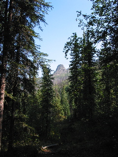

After leaving the hotel, we stopped quick at the Creamery fields to check out the flocks of migrating cranes. Also saw many geese and ducks as well.

Then for our first hike, we stopped at the Angle Rocks trail head in the Chena River State park. We stopped for lunch atop a hill, then continued on to Chena Hot Springs Resort. In all, about eight miles, in land scapes that are far hillier than I am used to. I was quite happy to see the end of the trail arrive.
It has been warmer than one would expect for Alaska in August. (middle to upper 80s F.)
I opted not to jump in the hot springs here, taking advantage of the last shower for a while was good enough for me.